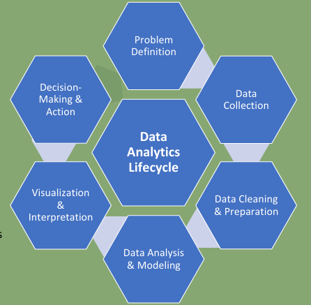
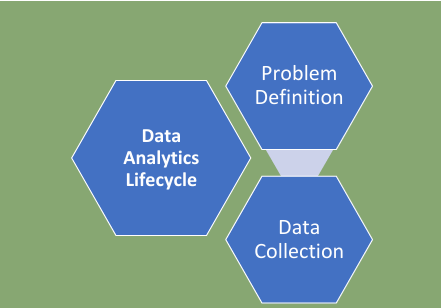
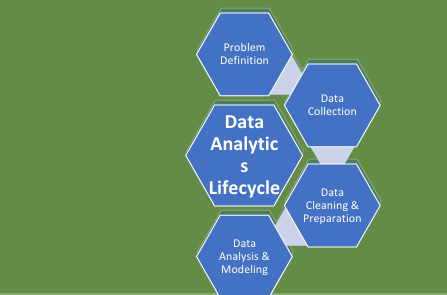
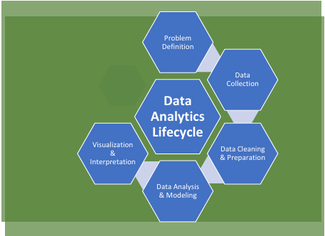
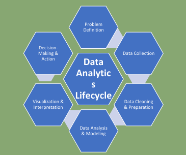

Data Analytics Lifecycle
📎Module 02 — Data Analytics · Giralyn R. Ongco, PhDTM
The Data Analytics Lifecycle is the structured, iterative process
analysts follow to turn a problem into a data-driven decision. It
consists of 6 steps: Problem Definition → Data Collection → Data
Cleaning & Preparation → Data Analysis & Modeling → Visualization
& Interpretation → Decision-Making & Action. Because results often
reveal new problems, the process is cyclical — not linear.
Overview: The 6-Step Lifecycle
The Data Analytics Lifecycle describes the
structured process analysts follow to turn a problem into a
data-driven decision. It is an
iterative process — results often reveal new
problems, causing you to cycle back to earlier steps.
- Problem Definition — Identify the question or decision to be supported
- Data Collection — Gather data from multiple sources
- Data Cleaning & Preparation — Remove errors and inconsistencies
- Data Analysis & Modeling — Apply analytical techniques
- Visualization & Interpretation — Present insights clearly
- Decision-Making & Action — Use insights to guide actions

Step 1: Problem Definition
01
Problem Definition
Definition: The process of clearly
identifying and stating the problem or decision that the
analysis is meant to support.
Why it's Important: It guides what data
to collect, determines which analytics methods to use,
prevents wasted time and misleading results, and ensures
analytics supports real decisions.
A well-defined problem clearly states:
Role in Lifecycle: Always the first step · Influences every other stage · May be revisited as insights emerge — this is why the lifecycle is iterative.
A well-defined problem clearly states:
- The issue or opportunity
- The objective of the analysis
- The decision to be supported
- The scope and limitations
- The expected output or insight
Role in Lifecycle: Always the first step · Influences every other stage · May be revisited as insights emerge — this is why the lifecycle is iterative.

Step 2: Data Collection
02
Data Collection
Definition: The process of gathering
relevant data from various sources to answer a defined
problem or support a decision.
Types of Data Sources:
Collection Considerations: Data accessibility, Legal compliance, Data privacy, Data security, Reliability of source.
- Internal: Transaction databases, ERP systems, HR systems, maintenance logs, operational dashboards
- External: Market data, weather data, open government datasets, social media, sensor feeds
| Structured | Unstructured |
|---|---|
| Tables, SQL databases | Text documents, Emails |
| Financial records | Images |
| Inventory systems | Sensor streams |
Collection Considerations: Data accessibility, Legal compliance, Data privacy, Data security, Reliability of source.
⚠️ Poor data collection leads to unreliable
conclusions — regardless of how sophisticated the
analysis is.
Step 3: Data Cleaning & Preparation
03
Data Cleaning & Preparation
Definition: The process of fixing,
organizing, and transforming raw data so it is accurate,
consistent, and ready for analysis.
Raw data is often: Incomplete · Inconsistent ·
Duplicated · Incorrect · Unstructured
Data Cleaning involves:
Data Cleaning involves:
- Removing duplicate records
- Handling missing values
- Correcting errors (wrong dates, invalid entries)
- Removing irrelevant or incorrect data
- Standardizing formats (dates, units, text)
- Organizing data into tables or structures
- Combining data from multiple sources
- Creating new variables if needed

Step 4: Data Analysis & Modeling
04
Data Analysis & Modeling
Definition: The stage where cleaned
data is examined using analytical and statistical
techniques to discover patterns, relationships, and
insights, and to build models that explain or predict
outcomes.
Types used: Descriptive (totals,
averages, trends) · Diagnostic (correlation, root cause)
· Predictive (regression, ML models) · Prescriptive
(optimization, simulation)
Statistical Methods: Regression · Hypothesis testing · Correlation analysis
Machine Learning: Linear/Logistic Regression · Decision Trees · Random Forest · Support Vector Machines · Neural Networks
Why important: Converts data into actionable knowledge · Supports evidence-based decisions · Enables forecasting and optimization
Statistical Methods: Regression · Hypothesis testing · Correlation analysis
Machine Learning: Linear/Logistic Regression · Decision Trees · Random Forest · Support Vector Machines · Neural Networks
Why important: Converts data into actionable knowledge · Supports evidence-based decisions · Enables forecasting and optimization
Step 5: Visualization & Interpretation
05
Visualization & Interpretation
Definition: The stage where analytical
results are presented using charts, graphs, and
dashboards, and then explained to derive meaningful
insights for decision-making.
Data Visualization: Converts results
into charts, graphs, and dashboards · Highlights
patterns, trends, and comparisons · Makes complex data
easy to understand
Data Interpretation: Explains what the visuals show · Identifies key insights · Relates results back to the original problem · Avoids misinterpretation
Principles of Effective Visualization: Simplicity · Clarity · Relevance · No unnecessary clutter · Highlight key insights
Data Interpretation: Explains what the visuals show · Identifies key insights · Relates results back to the original problem · Avoids misinterpretation
Principles of Effective Visualization: Simplicity · Clarity · Relevance · No unnecessary clutter · Highlight key insights

Step 6: Decision-Making & Action
06
Decision-Making & Action
Definition: The stage where insights
from data analysis are used to choose, implement, and
monitor actions that address the original problem.
During this stage, organizations: Review insights and
recommendations · Compare possible options · Select the
best course of action · Implement decisions · Monitor
outcomes and results
Types of Decisions Supported:
Types of Decisions Supported:
- Operational: Day-to-day actions
- Tactical: Short-term improvements
- Strategic: Long-term planning
🔄 The lifecycle is iterative — results may reveal new
problems, feeding back into the next analytics cycle.
